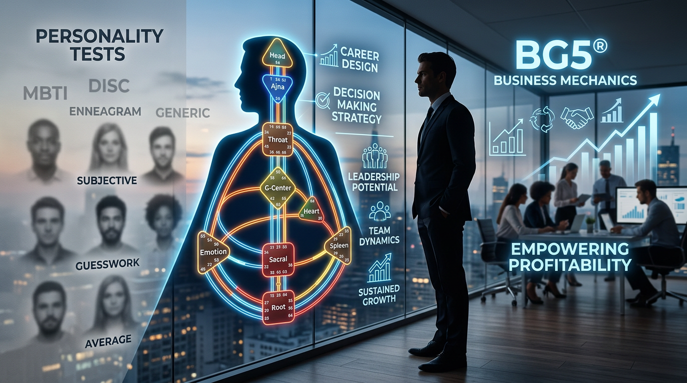

Il modo più semplice per capire il BG5®
Il BG5® calcola il tuo Success Code dalla nascita: scopri come funziona e come si applica a carriera, decisioni e team.

Hai compilato test di personalità, letto profili astrologici, risposto a questionari online che promettevano di rivelarti chi sei in quindici domande. Eppure ogni volta la sensazione è la stessa: una descrizione che ti somiglia a tratti, che potresti scambiare con quella di almeno altre venti persone nella tua cerchia. Ti riconosci in alcune frasi, ne scarti altre e alla fine resti con un ritratto sfocato. Se stai cercando qualcosa di più preciso — qualcosa che parta dalla tua biologia e non dalle tue risposte soggettive — il BG5® Design System merita la tua attenzione.
Il BG5® calcola come funzioni: non te lo chiede
La maggior parte degli strumenti di profilazione che conosci funziona con lo stesso schema. Ti viene posta una serie di domande, tu rispondi in base a come ti percepisci in quel momento, e un algoritmo raggruppa le tue risposte in una categoria. Il Myers-Briggs, il DISC, il test dei Big Five operano tutti con questo meccanismo. Il limite è strutturale: se oggi ti senti energico e sicuro di te, le tue risposte saranno diverse da quelle che daresti dopo una settimana frustrante in ufficio. Il risultato cambia perché cambiano le premesse. E le premesse sei tu, filtrato dal tuo umore.
Il BG5® Design System parte da un punto del tutto diverso. Utilizza i dati della tua nascita — data, ora precisa e luogo — per generare una mappa chiamata Success Code (BodyGraph in Human Design). Questa mappa sintetizza il modo in cui la tua biologia opera sia a livello cosciente sia a livello inconscio. Il calcolo incrocia due set di informazioni: quello relativo al momento della nascita e quello relativo a un punto circa ottantotto giorni prima, quando il neocortex fetale raggiunge la sua maturazione. Il primo livello descrive ciò di cui sei consapevole. Il secondo descrive ciò che agisce in te senza che tu lo veda direttamente.
Due persone nate nello stesso momento e luogo avranno lo stesso Success Code. Due persone nate a cinque minuti di distanza nello stesso ospedale potrebbero averne uno differente. La precisione sta nei calcoli, e i calcoli non cambiano a seconda di quanto hai dormito la notte prima. Il BG5® ti mostra meccanismi specifici: perché certe dinamiche lavorative si ripetono nella tua carriera, perché alcuni ambienti ti esauriscono mentre altri ti attivano, perché il tuo modo di prendere decisioni funziona in certi contesti e fallisce in altri.
Da dove nasce il BG5® e qual è la differenza con lo Human Design
Il sistema è stato sviluppato da Ra Uru Hu, nato Robert Allan Krakower, a partire dal 1987. Ra ha dedicato venticinque anni a raffinare queste informazioni attraverso l'osservazione diretta, lavorando con migliaia di persone. Alcuni ricercatori hanno integrato il sistema nel proprio lavoro professionale, contribuendo a verificarne l'accuratezza attraverso l'applicazione pratica.
Il BG5® fa parte di un corpo più ampio di conoscenze chiamato Scienza della Differenziazione, che include anche lo Human Design System®. La differenza tra i due sta nel punto di applicazione. Lo Human Design si concentra sul funzionamento complessivo della persona: i suoi nove Centri Energetici (Centri in Human Design), la sua Autorità Decisionale (Autorità Interiore in HD), la strategia legata al Tipo di Carriera (Tipo in HD). Il BG5® prende queste stesse informazioni e le traduce in strumenti operativi per la carriera, il business e le dinamiche di gruppo.
Se lo Human Design ti mostra come sei fatto, il BG5® ti dice come usare quello che sei nel contesto professionale. La mappa, in entrambi i casi, è il Success Code: lo schema dei nove Centri Energetici che rappresentano le funzioni biologiche e psicologiche attraverso cui elabori la realtà. Quando lavoro con un cliente, parto sempre da quella mappa. Ed è lì che emergono le risposte che nessun questionario ti darà.
Perché il confronto con i colleghi distorce le tue scelte professionali
Pensa all'ultima volta che hai guardato il profilo LinkedIn di un collega e hai sentito una stretta. Quella persona sembra avere tutto chiaro: ruolo definito, progressione lineare, competenze allineate al mercato. Tu invece hai cambiato settore due volte, hai un curriculum che sembra un collage e non riesci a spiegare in una frase cosa fai esattamente. La tentazione è pensare che ci sia qualcosa di sbagliato nel tuo modo di procedere.
Il BG5® mostra qualcosa di molto diverso. All'interno del sistema esistono cinque Tipi di Carriera, ciascuno con una strategia diversa per interagire con il mondo del lavoro. Un Costruttore Classico (Generatore Puro in HD), ad esempio, funziona aspettando le richieste giuste prima di investire la propria energia. Quando un Costruttore Classico prende iniziative senza che nessuno gliele abbia chieste, si esaurisce e ottiene risultati mediocri. L'energia di questo Tipo di Carriera è reattiva: si accende in risposta a uno stimolo esterno e, quando quello stimolo è corretto, la risposta è una spinta viscerale che dice sì. Quel segnale nel corpo è la bussola. Ignorarlo porta alla frustrazione cronica.
Un Valutatore (Riflettore in HD) ha un compito del tutto diverso. Osserva, attende un ciclo lunare completo — circa ventinove giorni — e poi condivide la propria visione con chi è pronto ad ascoltarla. Se un Valutatore cerca di agire come un Costruttore Classico, spingendo e producendo, genera frustrazione in sé stesso e resistenza negli altri. Il suo ritmo è diverso. La sua utilità sta nella capacità di leggere la salute di un ambiente dopo aver raccolto abbastanza dati. Forzare i tempi significa compromettere la qualità di ciò che ha da offrire.
Il confronto non funziona perché stai paragonando meccanismi diversi. Sarebbe come valutare un pesce dalla sua capacità di arrampicarsi su un albero. Il Success Code ti permette di capire qual è il tuo meccanismo specifico e di smettere di misurarti con parametri che appartengono a qualcun altro.
Il condizionamento dei Centri Energetici aperti e le carriere costruite sulle aspettative altrui
Da bambino hai ricevuto messaggi su chi dovresti essere. Un genitore ti ha detto di essere più deciso. Un insegnante ti ha chiesto di parlare di più in classe. Un coetaneo ti ha fatto capire che il tuo modo di fare era strano. Questi messaggi si sono stratificati e hanno creato una versione di te che non corrisponde al tuo funzionamento reale. Una versione adattata.
Nel linguaggio del BG5® questo fenomeno si chiama condizionamento e opera attraverso i Centri Energetici aperti del tuo Success Code. Ogni Centro aperto è un punto in cui assorbi e amplifichi l'energia delle persone intorno a te. Se hai il Centro del Cuore aperto, tendi ad assorbire la pressione a dimostrare il tuo valore. Questo può spingerti a fare promesse eccessive, ad accettare carichi di lavoro insostenibili, a entrare in gare che non ti appartengono. Quel Centro funziona come un'antenna: capta il segnale degli altri e lo amplifica dentro di te.
Prendiamo un altro caso. Il Centro della Gola aperto. Se lo hai non definito nel tuo schema, potresti aver sviluppato l'abitudine di parlare troppo, di attirare l'attenzione a tutti i costi, di forzare la comunicazione nei momenti sbagliati. Tutto questo perché l'apertura in quel Centro ti rende sensibile alla pressione sociale di esprimere, dichiarare, affermare. Hai imparato a comportarti così osservando chi intorno a te aveva quel Centro definito e funzionava in modo diverso.
Il risultato è che molte delle tue scelte professionali rispondono al condizionamento. Il BG5® ti permette di identificare con precisione quali Centri sono aperti nel tuo schema e quali comportamenti hai sviluppato in risposta a quell'apertura. Una volta che vedi il meccanismo, smetti di esserne governato.
Cosa contiene il tuo Success Code e come si legge
Il Success Code è composto da diversi livelli di informazione. Il primo è il tuo Tipo di Carriera, che determina la strategia generale con cui interagisci nel mondo professionale. I cinque Tipi — Costruttore Classico, Costruttore Rapido (Generatore Manifestante in HD), Iniziatore (Manifestatore in HD), Guida (Proiettore in HD) e Valutatore — descrivono modalità operative distinte. Ciascuno ha una strategia specifica e un segnale nel corpo che conferma o smentisce la correttezza di una decisione.
Il secondo livello è la tua Autorità Decisionale. Questo è il meccanismo decisionale specifico attraverso cui puoi fare scelte affidabili. L'Autorità Decisionale emozionale, ad esempio, richiede di aspettare la chiarezza emotiva prima di decidere. Se hai questo tipo di autorità, ogni decisione presa sull'onda dell'entusiasmo o della rabbia risulterà distorta. Devi aspettare che l'onda emotiva completi il suo ciclo e arrivi a un punto di calma. L'Autorità Decisionale splenica, al contrario, funziona attraverso impulsi istantanei del corpo: una sensazione fisica che arriva una volta sola e non si ripete. Due meccanismi opposti, entrambi validi, entrambi precisi per la persona che li possiede.
Poi ci sono le Funzioni (Linee in Human Design) assimilative e comunicative: i modi specifici in cui elabori le informazioni e le trasmetti agli altri. Queste Funzioni corrispondono ai Centri Energetici definiti nel tuo Success Code e descrivono le tue capacità costanti, quelle su cui puoi fare affidamento indipendentemente dall'ambiente in cui ti trovi.
Il Success Code include anche le aree di attrazione e di distrazione: i contesti in cui la tua energia si attiva naturalmente e quelli in cui tende a disperdersi. Questa informazione è particolarmente utile quando devi scegliere tra opportunità professionali o valutare se un ambiente lavorativo è adatto a te. Due persone con lo stesso Tipo di Carriera possono avere Autorità Decisionali diverse, Funzioni diverse, aree di attrazione opposte. La combinazione è unica.
Come il BG5® cambia la composizione dei team e le decisioni aziendali
Uno degli ambiti in cui il BG5® produce risultati misurabili è la composizione dei gruppi di lavoro. Ogni team ha una dinamica energetica che dipende dalla combinazione dei Success Code dei suoi membri. Quando metti insieme cinque persone con lo stesso Tipo di Carriera, ottieni un gruppo che funziona in un modo molto specifico. Quando mescoli Tipi diversi, la dinamica cambia radicalmente.
Immagina un team di progetto composto da cinque Costruttori Classici. L'energia produttiva sarà alta, la capacità di esecuzione notevole. Quello che mancherà è la visione a lungo termine, la capacità di leggere il quadro strategico. Ora immagina un team di sole Guide. Le analisi saranno brillanti, le osservazioni profonde. Il passaggio all'azione, però, si bloccherà perché la Guida ha bisogno di essere riconosciuta e invitata prima di poter operare al meglio. In un gruppo composto solo da Guide, tutti attendono un invito che nessuno formula.
Il BG5® permette di analizzare queste combinazioni e di capire dove un team è energeticamente ridondante e dove ha dei vuoti operativi. Per le aziende, questo si traduce in decisioni più efficaci su assunzioni, riorganizzazioni e assegnazione dei ruoli. Quando un manager conosce il Tipo di Carriera e l'Autorità Decisionale di ogni membro del suo team, può assegnare compiti in modo coerente con il funzionamento di ciascuno. Il risultato è che le persone producono di più perché lavorano secondo la propria meccanica, e il team nel suo insieme copre tutte le funzioni necessarie.
Per i liberi professionisti, il BG5® applicato alle partnership funziona allo stesso modo. Sapere con chi collaborare e in che forma strutturare la collaborazione evita mesi di tentativi che finiscono in conflitto o in stanchezza reciproca. Un Costruttore Rapido e una Guida possono formare una partnership eccellente, a patto che ciascuno rispetti il meccanismo dell'altro: il Costruttore Rapido agisce e produce, la Guida osserva e dirige. Se i ruoli si invertono, la collaborazione si inceppa.
Quando smetti di adattarti, l'energia torna dove serve
C'è una sensazione fisica che le persone descrivono dopo aver ricevuto la propria Analisi BG5® (Reading in Human Design). Dicono che è come togliersi uno zaino pesante che portavano da anni senza rendersene conto. Quello zaino è fatto di aspettative altrui, confronti inutili e strategie copiate da chi funziona in modo diverso da te.
Quando vedi nero su bianco che il tuo modo di operare ha una logica precisa, che le difficoltà che hai incontrato non dipendono da una tua mancanza ma da un'incompatibilità tra il tuo design e il contesto in cui ti sei inserito, qualcosa si rilassa. Smetti di sforzarti di essere qualcun altro. Puoi iniziare a costruire la tua carriera, il tuo brand, le tue relazioni professionali a partire da quello che sei.
Questo non significa che tutto diventa semplice. Significa che le tue energie vanno dove possono produrre risultati reali, invece di disperdersi nel tentativo di imitare un modello che non ti appartiene. E significa che le decisioni che prendi hanno un criterio interno stabile, che non dipende dall'opinione di chi ti sta accanto in quel momento.
Se vuoi vedere il tuo Success Code e capire come si applica alla tua carriera e alle tue decisioni professionali, puoi prenotare un'Analisi BG5® individuale con Valentina Russo. Ti basta la data, l'ora e il luogo di nascita. Il resto lo fa lo schema.
Domande Frequenti
Qual è la differenza tra BG5® e Human Design?
Lo Human Design System® analizza il funzionamento complessivo della persona attraverso il BodyGraph. Il BG5® prende le stesse informazioni e le traduce in strumenti operativi per la carriera, il business e le dinamiche di gruppo. Entrambi usano la stessa mappa (Success Code / BodyGraph), ma il BG5® si concentra sull'applicazione professionale: Tipi di Carriera, Autorità Decisionale nel lavoro, composizione dei team e partnership.
Cosa serve per ottenere il proprio Success Code BG5®?
Per calcolare il Success Code servono tre dati: data di nascita, ora precisa di nascita e luogo di nascita. Questi dati vengono incrociati per generare due set di informazioni — uno relativo al momento della nascita e uno relativo a circa ottantotto giorni prima, quando il neocortex fetale raggiunge la sua maturazione. Il risultato è una mappa unica che descrive il funzionamento biologico individuale.
Quali sono i cinque Tipi di Carriera nel BG5®?
I cinque Tipi di Carriera BG5® sono: Costruttore Classico (Generatore Puro in HD), Costruttore Rapido (Generatore Manifestante in HD), Iniziatore (Manifestatore in HD), Guida (Proiettore in HD) e Valutatore (Riflettore in HD). Ciascuno ha una strategia operativa diversa, un segnale corporeo specifico per le decisioni e un modo distinto di interagire con il mondo professionale.
Il BG5® può essere usato per i team aziendali?
Sì. Il BG5® analizza la combinazione dei Success Code dei membri di un team per identificare ridondanze energetiche e vuoti operativi. Questo permette di assegnare ruoli coerenti con il funzionamento di ciascuno, migliorare la composizione dei gruppi di lavoro e strutturare partnership professionali in modo che ogni persona operi secondo la propria meccanica biologica.
Vuoi portare il BG5® nella tua azienda?
Se vuoi capire come si applica alla tua realtà, scopri i servizi disponibili. Se sai già cosa cerchi, prenota una consulenza diretta.
Continua a leggere

Ansia da decisione: perché non riesci a scegliere e come uscirne
Ti blocchi davanti alle decisioni importanti? L'ansia da scelta ha una causa precisa: stai usando la mente per decidere …
Leggi articolo →
Come aspettare l'invito senza perdere lo slancio professionale
Se sei una Guida e senti che aspettare l'invito ti blocca la carriera, questo articolo ti mostra come affinare la tua fr…
Leggi articolo →
Assumere la persona sbagliata costa 30.000 euro: un metodo per non sbagliare
Un'assunzione sbagliata costa 6-9 mesi di stipendio. Il curriculum non ti dice come la persona gestisce lo stress, prend…
Leggi articolo →
BG5: perché attiri certi clienti (e come smettere di sbagliarti)
Stai attirando clienti sbagliati? Con il BG5 scopri la meccanica reale dietro la tua clientela e come la coerenza cambia…
Leggi articolo →